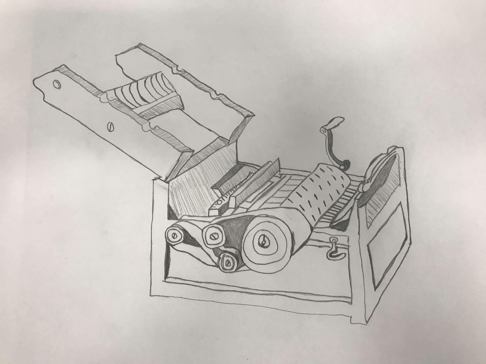
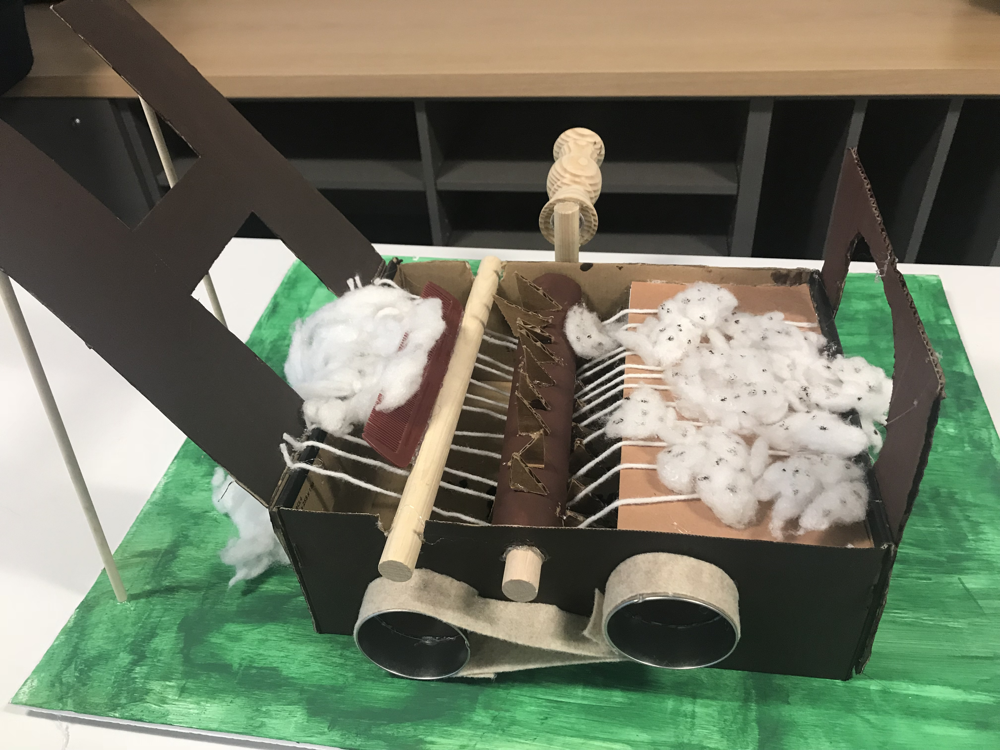
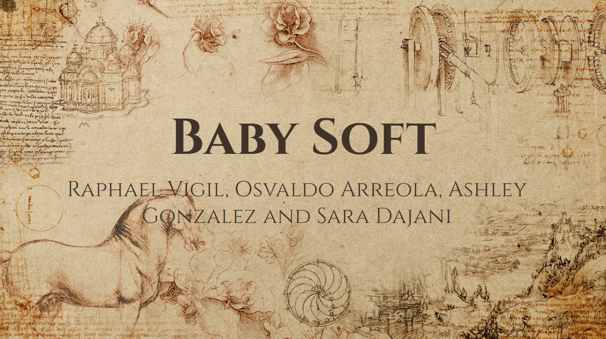

This is my interview transcript. If you click on the screen shot then it will take you to the document where you can see more of it.

Scribble Map
This is my map that i made from the interview and what places my interviewee talked about. If you click the image it will take you to the page to view it larger

A Timely Solution
In this project we were put in groups and from the groups we were assigned an invention that was a big impact in the industrial revolution. My group was given the cotton gin. We each did different research about the invention then from there we had to do an anotated bibliography which was bascially about the reseach we each did. One of our group members did a sketch of what it looks like. The rest of the time we worked together to build the 3D Model of our invention.
3D Sketch
3D Model
The Cotton Gin
Press Release
